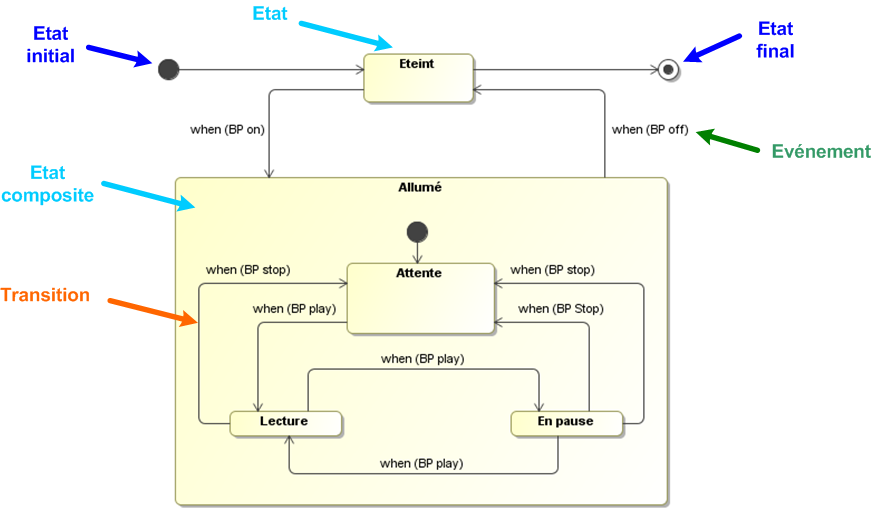
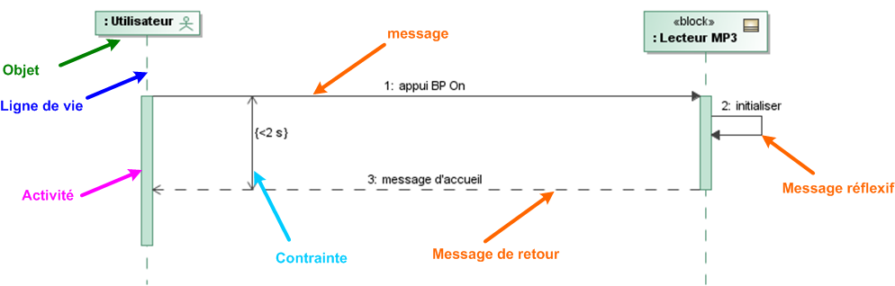
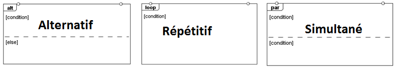

Description comportementale
Pour modéliser l'aspect dynamique d'un système et/ou de ses constituants, le langage sysML propose des diagrammes de comportement parmi lesquels on trouve :
Le diagramme d'état (stm)
Il modélise l'évolution de l'état d'un block en fonction des événements qui peuvent se produire. Exemple :

Diagramme état - transition partiel d'un lecteur MP3
remarque : BP : bouton poussoir
Le diagramme de séquence (sd)
Il représente l'échange de messages entre le système et des acteurs, ou entre des parties du système, de manière chronologique en précisant d'éventuelles contraintes de temps. La lecture d'un tel diagramme se fait de haut en bas.

Diagramme de séquence du cas d'utilisation "Allumer" du lecteur MP3
Lorsque une séquence de message n'est pas linéaire (conditionnelle, répétitive, simultanée), les messages concernés sont encadrés par des fragments combinés :

Created with the Personal Edition of HelpNDoc: Produce electonic books easily